Welcome to Rig Rectifier
- 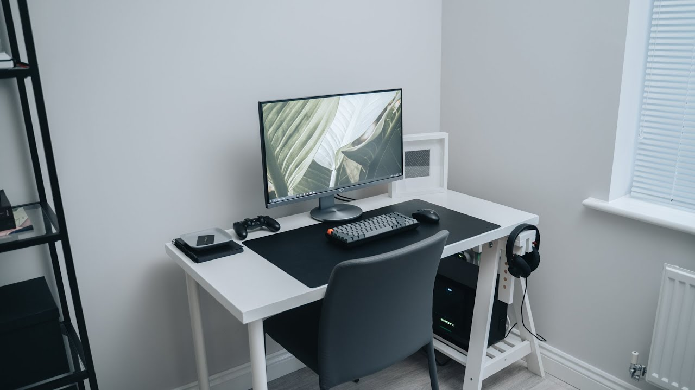
- 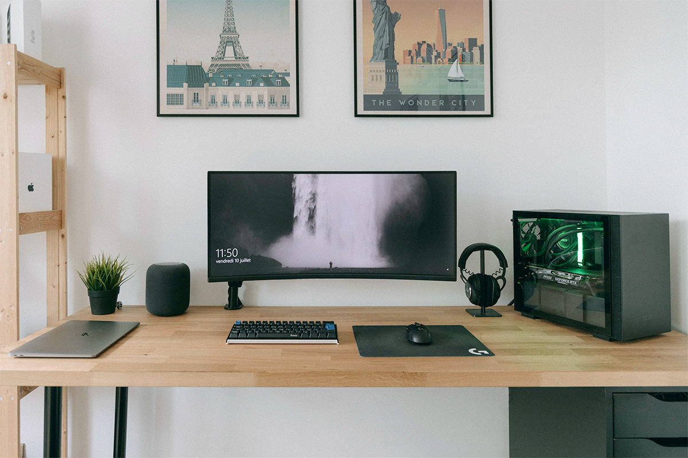
- 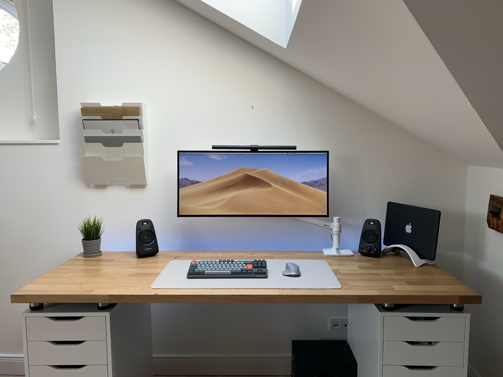
- 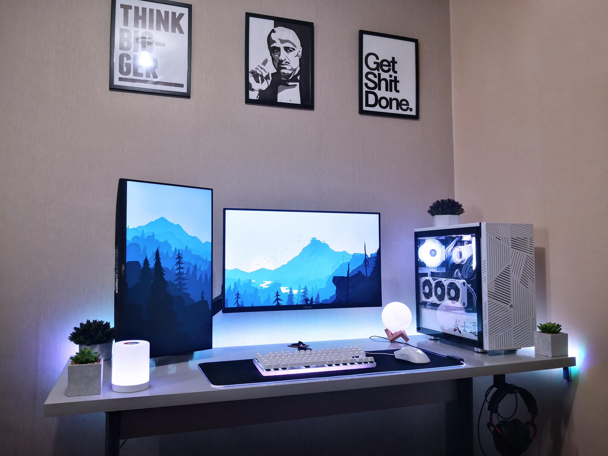
- 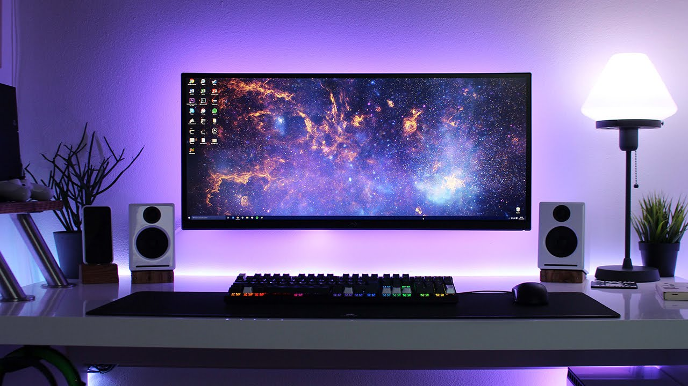
- 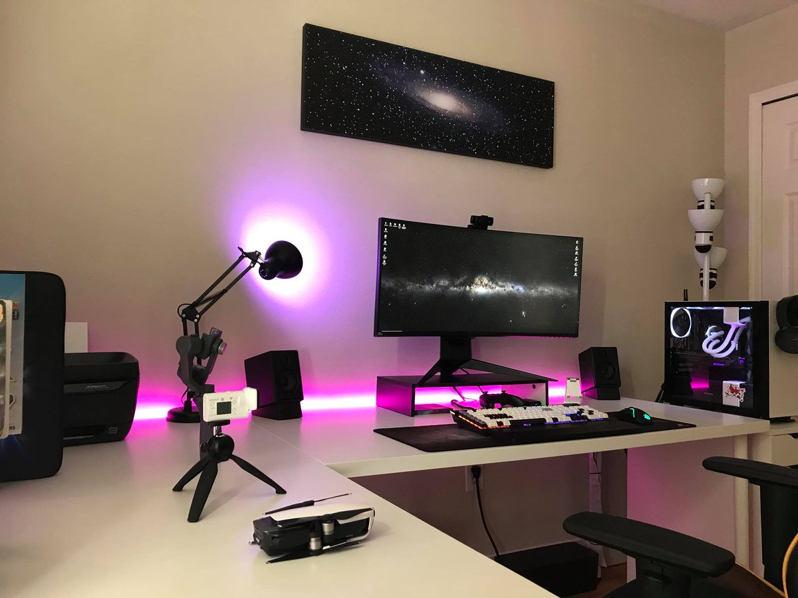
- 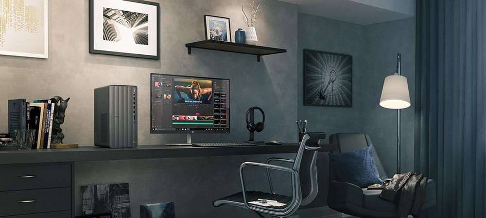

Latest Tech Radar
The latest NVIDIA RTX GPU's GeForce RTX™ 30 Series GPUs deliver the ultimate performance for gamers and creators. They’re powered by Ampere—NVIDIA’s 2nd gen RTX architecture—with new RT Cores, Tensor Cores, and streaming multiprocessors for the most realistic ray-traced graphics and cutting-edge AI features. NVIDIA Deep Learning Super Sampling (DLSS) is groundbreaking AI rendering that boosts frame rates with uncompromised image quality using the dedicated AI processing Tensor Cores on GeForce RTX. This gives you the performance headroom to crank up settings and resolutions for an incredible visual experience. The AI revolution has come to gaming.Take your creative projects to a whole new level with GeForce RTX 30 Series GPUs. Delivering AI-acceleration in top creative apps. Backed by the NVIDIA Studio platform of dedicated drivers and exclusive tools. And built to perform in record time. Whether you’re rendering complex 3D scenes, editing 8K video, or livestreaming with the best encoding and image quality, GeForce RTX GPUs give you the performance to create your best.
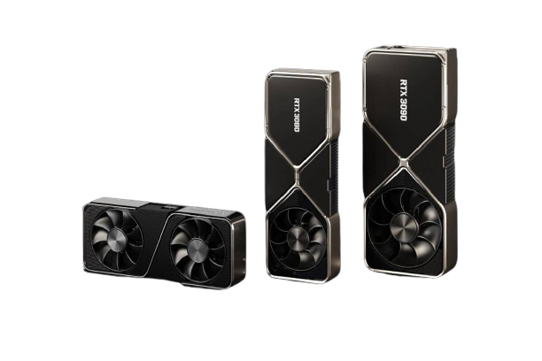Benchmarks:
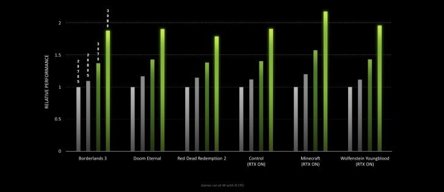 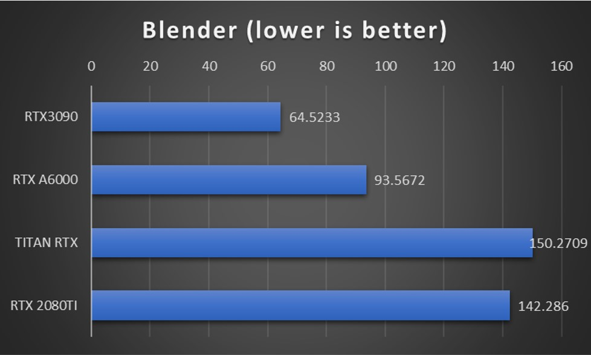 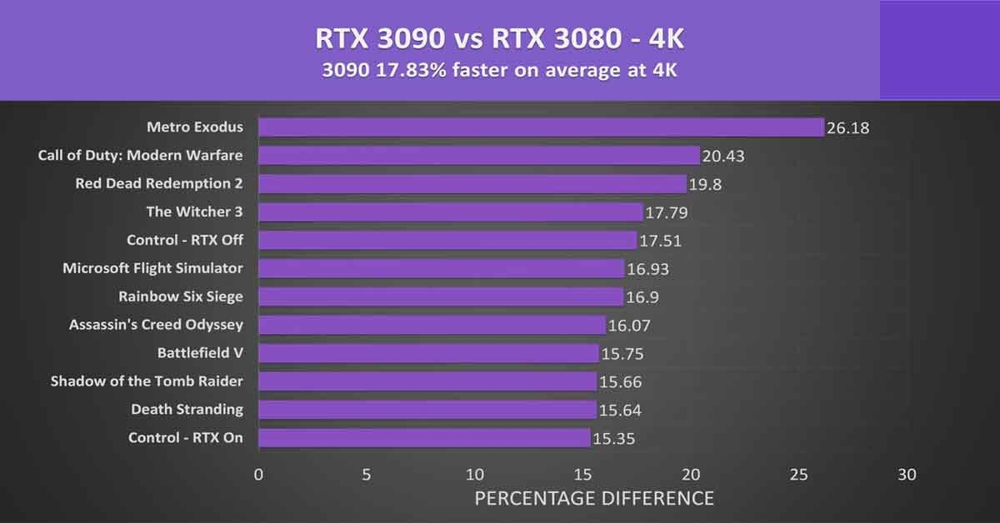The all new AMD 6000 Series The AMD Radeon RX 6000 Series graphics cards represent the forefront of extreme engineering and design to deliver ultra-high frame rates. Powerful new compute units, the all-new AMD Infinity Cache, and large amounts of GDDR6 memory enable the ultimate gaming experience.Enhanced compute units featuring Ray Accelerators, and an advanced visual pipeline in the Radeon™ RX 6000 Series supports hardware accelerated raytracing and variable rate shading to drive realistic visuals and high performance in games. With up to 128MB of ground-breaking AMD Infinity Cache acting as a massive bandwidth amplifier, get up to 3.25x the effective bandwidth of 256-bit 16 Gbps GDDR6 memory.
Benchmarks:
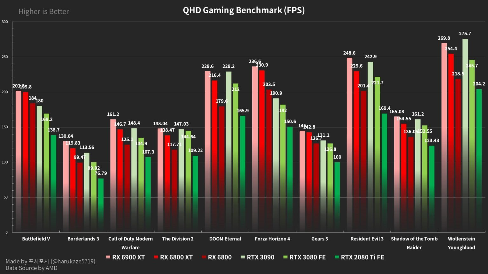 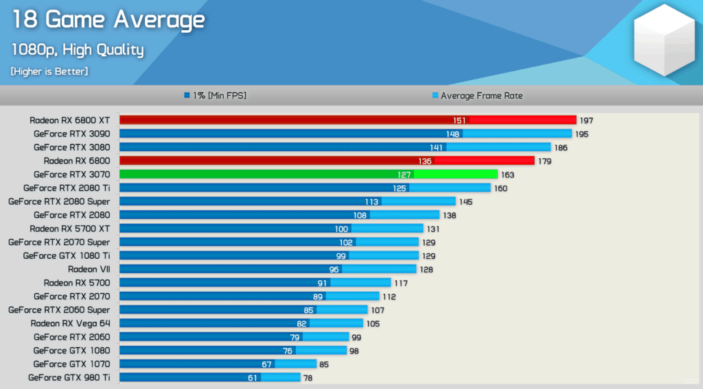 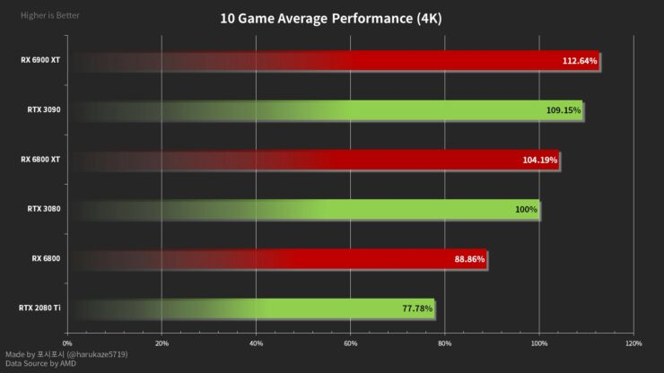Intel core 11th Gen 11th Generation Intel® Core™ processors redefine Intel® CPU performance for laptop and desktop PCs. New core and graphics architectures, AI-based performance boosts, best-in-class wireless and wired connectivity1, and advanced tuning features2 deliver higher levels of power and flow to support your aspirations. 25-watt 11th Gen Intel® Core™ U-Series laptop processors featuring Intel® Iris® Xe Graphics provide discrete-level integrated graphics alongside Intel® Wi-Fi 6 — for boundary-breaking performance in thin and light laptops for everyday use. Higher-powered 35-watt 11th Gen Intel® Core™ H-Series laptop processors introduce ultraportable horsepower for gaming and creating. 11th Gen Intel® Core™ S-Series desktop processors provide higher performance to everyday desktop users, enthusiast gamers, and serious creators. Intel® Deep Learning Boost, up to DDR4-3200, 20 CPU PCIe 4.0 lanes, integrated USB 3.2 20G, enhanced UHD graphics based on the Intel® Xe architecture, and greater tuning and expandability dramatically increase performance and control. High-performance overclocking for elite gaming and heavy-duty creative production is provided in unlocked 11th Gen Intel® Core™ desktop processor models. Built for business, 11th Gen Intel® Core™ vPro® processors offer all the performance gains of 11th Gen along with modern remote manageability for IT. Just what’s needed for the work-from-anywhere world. Offering a range of CPU models optimized for different levels of gaming, creating, business, and everyday use, there’s an 11th Gen Intel® Core™ laptop or desktop processor designed to do more of what matters to you.
AMD 5000 series CPU's and APU's The AMD Ryzen family is an x86-64 microprocessor family from AMD, based on the Zen microarchitecture. The Ryzen lineup includes Ryzen 3, Ryzen 5, Ryzen 7, Ryzen 9, and Ryzen Threadripper with up to 64 cores. All consumer Ryzens have an unlocked multiplier and all support Simultaneous Multithreading (SMT) except earlier Zen/Zen+ based desktop Ryzen 3 and Zen/Zen+/Zen 2 (Lucienne excluded) based mobile Ryzen 3. the AMD Ryzen 5000 series of processors have been gracing us with its presence for some time now. Its mid-range and high-end CPUs, in fact, are already powering such popular desktop PCs as the Alienware R10 Ryzen Edition and a gaming laptop such as the ASUS ROG Zephyrus Duo SE, as there’s a big focus for this newly-launched lineup of processors on gaming. With the AMD Ryzen 5000 CPUs, AMD has finally dethroned Intel when it comes to raw gaming performance. The new CPU lineup is led by the AMD Ryzen 9 5950X, a high-end chip packed with 16 cores and 32 threads, with a whopping 4.9GHz boost clock. That's a pretty massive generational leap over the Ryzen 9 3950X already, before you consider the boost to IPC (instructions per clock) performance, thanks to the massive Zen 3 redesign.AMD has had several products with Zen 3, including the regular Ryzen 5000 and EPYC 7003 processor lineups, and 5000G will take on the same feature set.
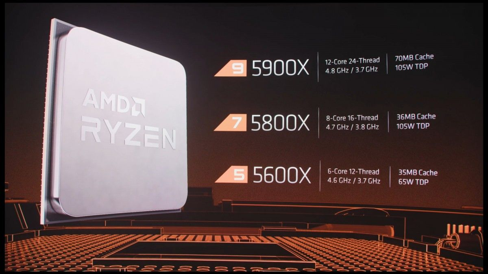About us:
This is a place where you can build you personal/commercial computer according to your needs. Above you can find the pre built computer section which are sorted by their prices according to the task you are going to perform. You can also comapre various computer components performance and their prices. We also provide suggestions for computer accesories.